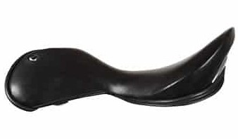

Academic

This Seat will suit the Classical Dressage Rider that wants more room in the seat without constriction.
feel is a jumping seat in that it has a flatter middle that allows the rider to move their seat backwards or forwards more so than would be achievable in say an Extra Deep seat.
The Academic seat benefits from a much higher cantle than the Flat Seat and therefore gives the support one would expect for dressage.
Grand Prix

Like the Academic seat this Seat will suit the Classical Dressage Rider that wants more room in the seat without constriction.
The difference is the cantle is from a Deep seat whereas the Academic is from a Extra Deep.
This gives a slightly lower and more round appearance that some customers prefer.
The feel is like a jumping seat in that it has a flatter middle that allows the rider to move their seat backwards or forwards more so than would be achievable in say an Extra Deep seat.
Deep
Has a round high cantle with belly to give support and aid position.
Used by dressage riders and show jumpers alike because the seat give a secure central feel.
Extra Deep

Has a very high round cantle with belly to give a deep supportive seat used mainly by dressage riders.
Shallow

Has a round shallow cantle with belly to give support and aid position but gives enough room to slide back or over the cantle when jumping.
Continental

This seat is derived from the showing saddle seat.
The seat is wider than the flat (square cantle jumping) and also has a small belly (support at the sides of the cantle.
The back is square and on the curved tree profile feels deep.
This seat is rather like the Shallow Seat Profile but has a larger area to sit on as the cantle does not end so sharply.
Flat

Has a square cantle and no belly.
This allows the rider to sit further back in the seat when necessary as it lacks the support at the sides of the seat.
Cross Country (XC)

The Cross Country seat has a sloped cantle with no belly support and is shaped in such a way that even sitting right back on the cantle does not make the rider feel pushed away from the horse.
Stock

Has a wider seat with more supportive ‘wrap around’ cantle and generous cup shape allowing more rotation of the pelvis with a support much further back that traditional saddles.
XD Stock

Exactly like the Stock Seat this seat has a wider seat with more supportive ‘wrap around’ cantle and generous cup shape allowing more rotation of the pelvis with a support much further back that traditional saddles.
The XDSTOCK Cantle is rounded in shape to minick that of the Xdeep and therefore looks very similiar when on the horse whilst feeling totally different.